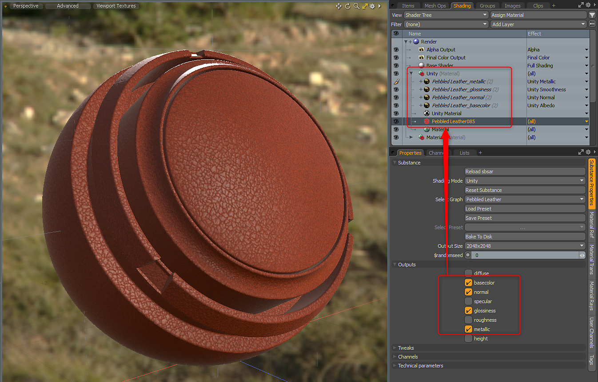
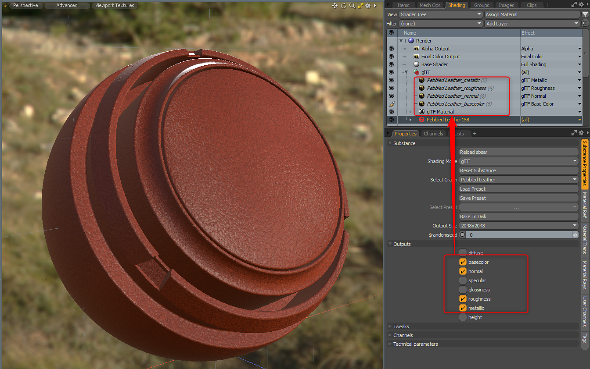

Custom Materials
The Substance plugin supports the Unreal, Unity and glTF custom materials. Before you load an sbsar file, you can select which shading mode you would like to use.
Table of Contents
Unity Material
When using the Unity Material, the Material Layer Effect will be set automatically. The Substance Plugin will place the Unity Material directly above the Substance Item Material.
| Substance Output | Colorspace | Material Layer Effect |
|---|---|---|
| Base Color | sRGB | Unity Albedo |
| Glossiness | Linear | Unity Smoothness |
| Metallic | Linear | Unity Metallic |
| Normal | Linear | Unity Normal |
| Emissive | sRGB | Unity Emission *set to sRGB on Image Still |
| Height | Linear | Unity Bump |
| Ambient Occlusion | Linear | Unity Ambient Occlusion |

Unreal Material
When using the Unreal Material, the Material Layer Effect will be set automatically. The Substance Plugin will place the Unreal Material directly above the Substance Item Material.
Substance Output | Colorspace | Material Layer Effect |
|---|---|---|
| Base Color | sRGB | Unreal Base Color |
| Roughness | Linear | Unreal Roughness |
| Metallic | Linear | Unreal Metallic |
| Normal | Linear | Unreal Normal |
| Height | Linear | Unreal Bump |
| Emissive | sRGB | Unreal Emissive *set to sRGB on Image Still |
| Ambient Occlusion | Linear | Unreal Ambient Occlusion |
| Opacity | Linear | Unreal Opacity *need to uncheck inverted on the Texture Layer |

You may need to invert the normal. You can do this from the Tweaks menu if the Substance has a control for normal orientation. If not, this can be done on the texture itself. For more information, please see the "Working with Normals" page.
glTF Material
When using the glTF Material, the Material Layer Effect will be set automatically. The Substance Plugin will place the glTF Material directly above the Substance Item Material.
Substance Output | Colorspace | Material Layer Effect |
|---|---|---|
| Base Color | sRGB | glTF Base Color |
| Roughness | Linear | glTF Roughness |
| Metallic | Linear | glTF Metallic |
| Normal | Linear | glTF Normal |
| Emissive | sRGB | glTF Emissive *set to sRGB on Image Still |
| Ambient Occlusion | Linear | glTF Ambient Occlusion |

You may need to invert the normal. You can do this from the Tweaks menu if the Substance has a control for normal orientation. If not, this can be done on the texture itself. For more information, please see the "Working with Normals" page.